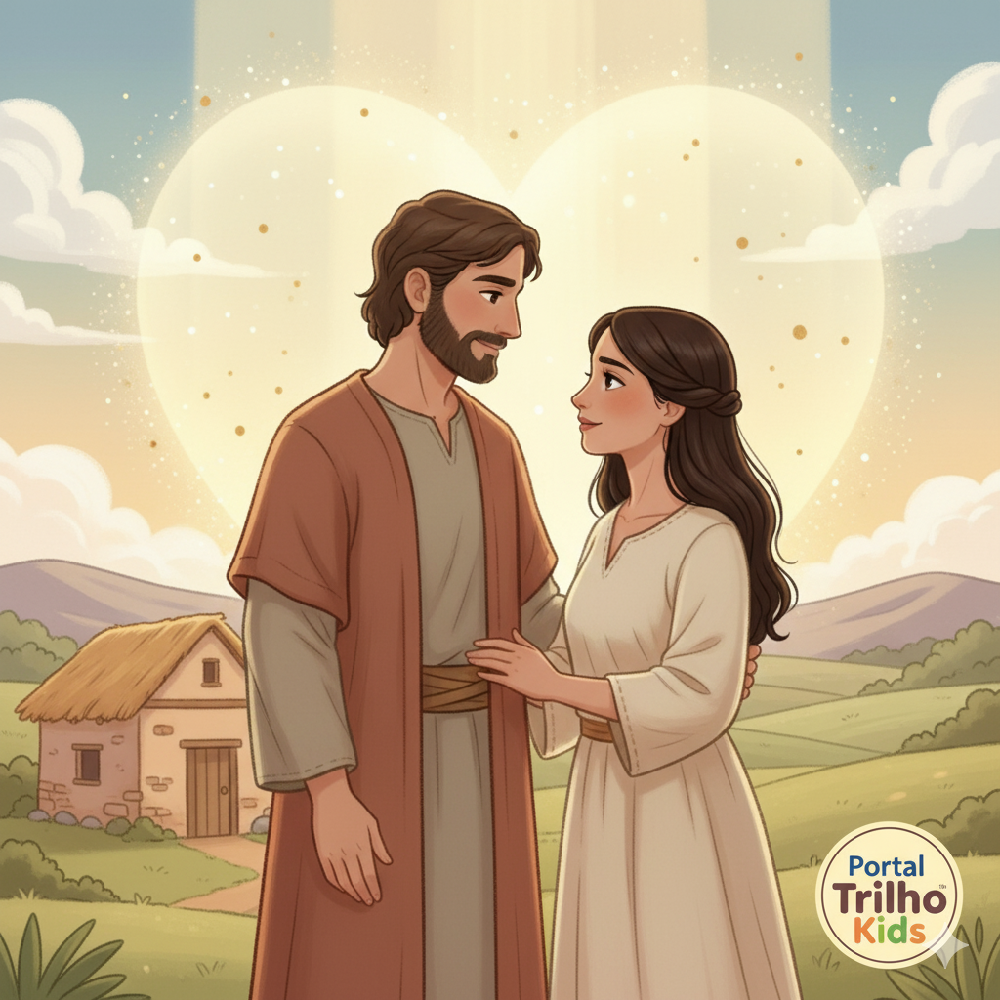
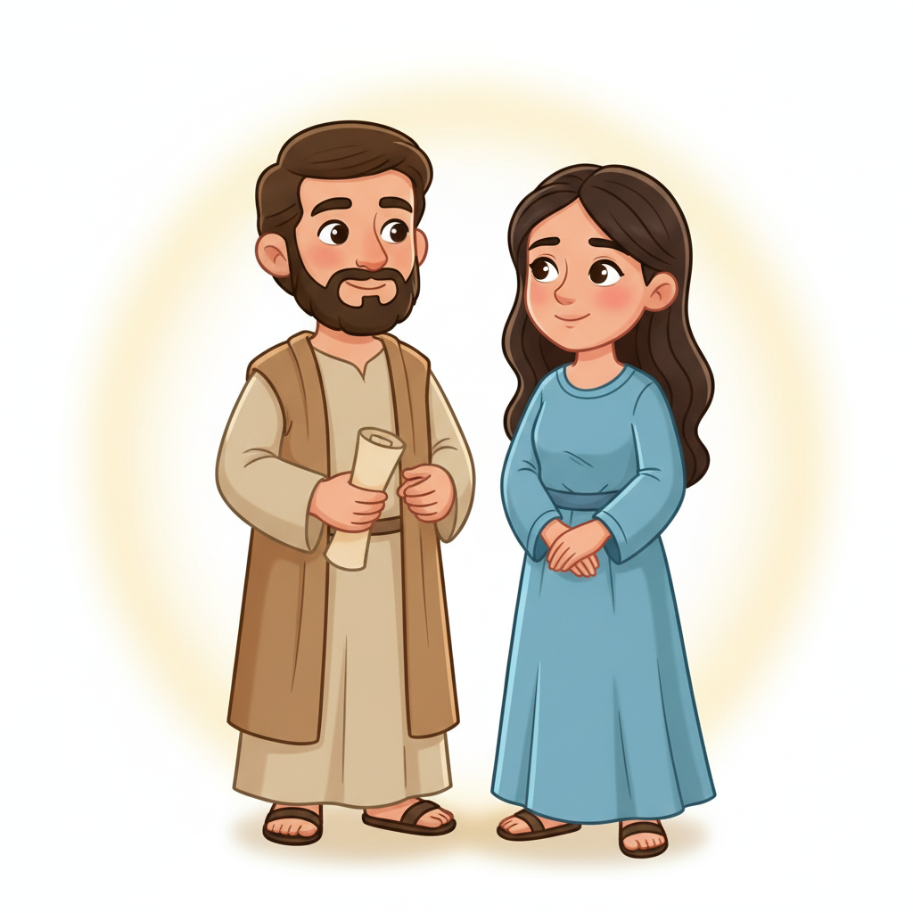
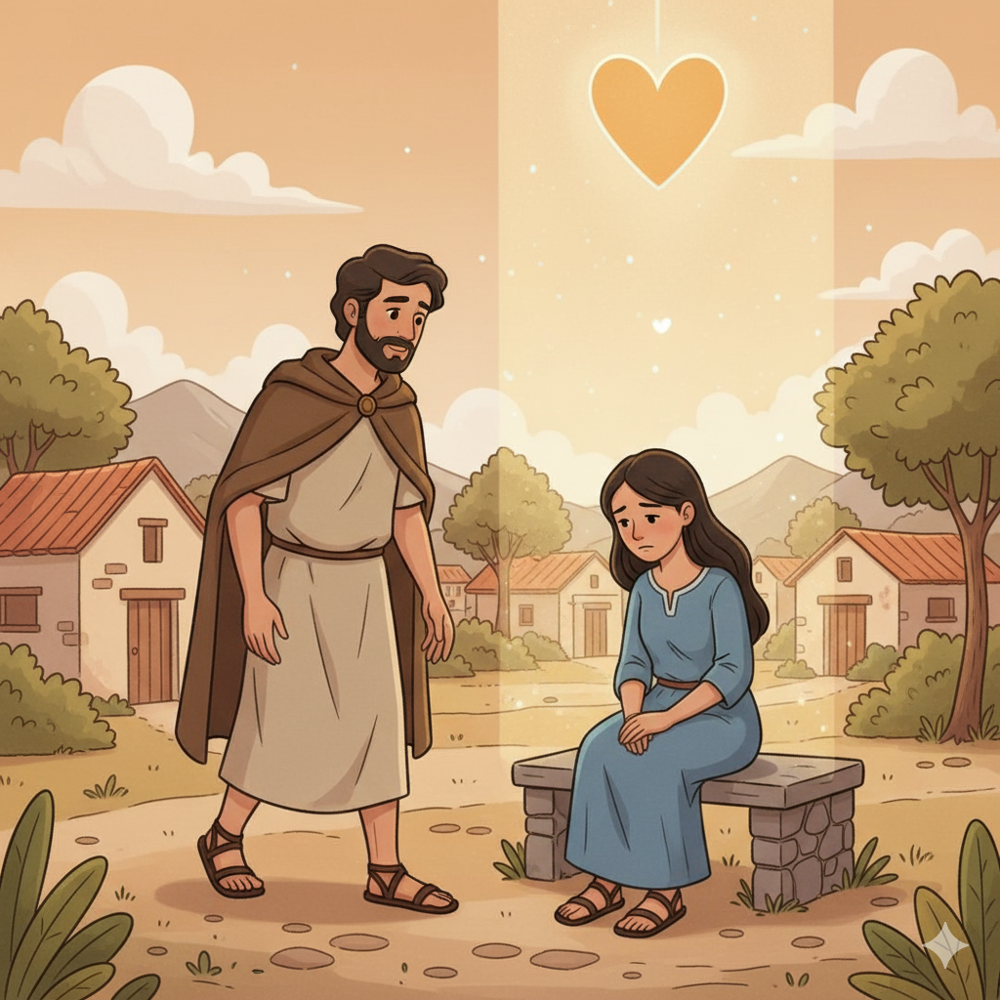
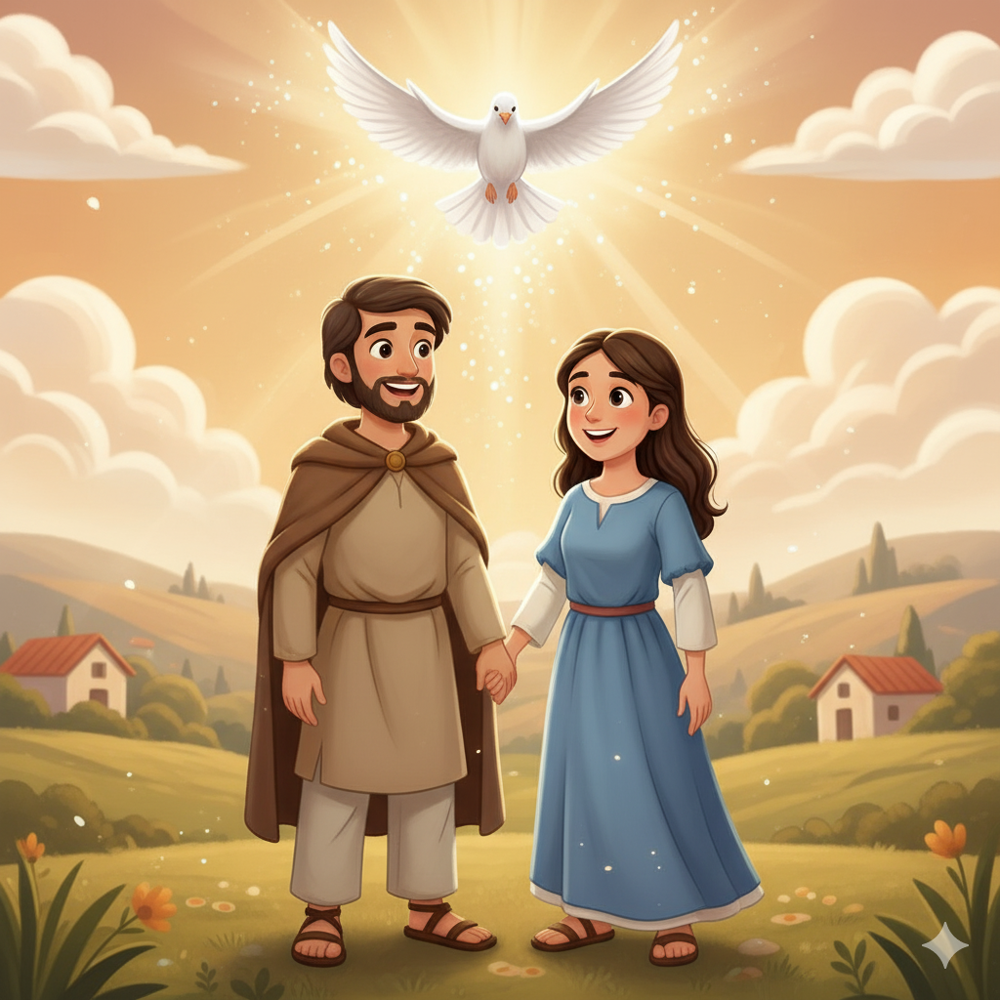
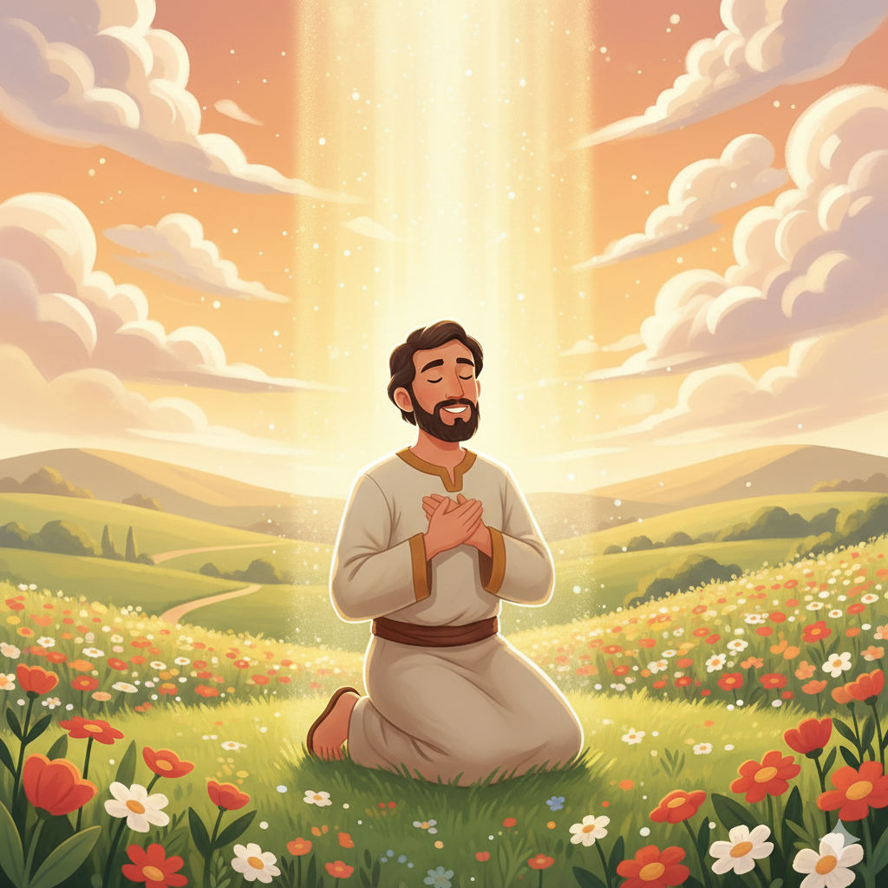
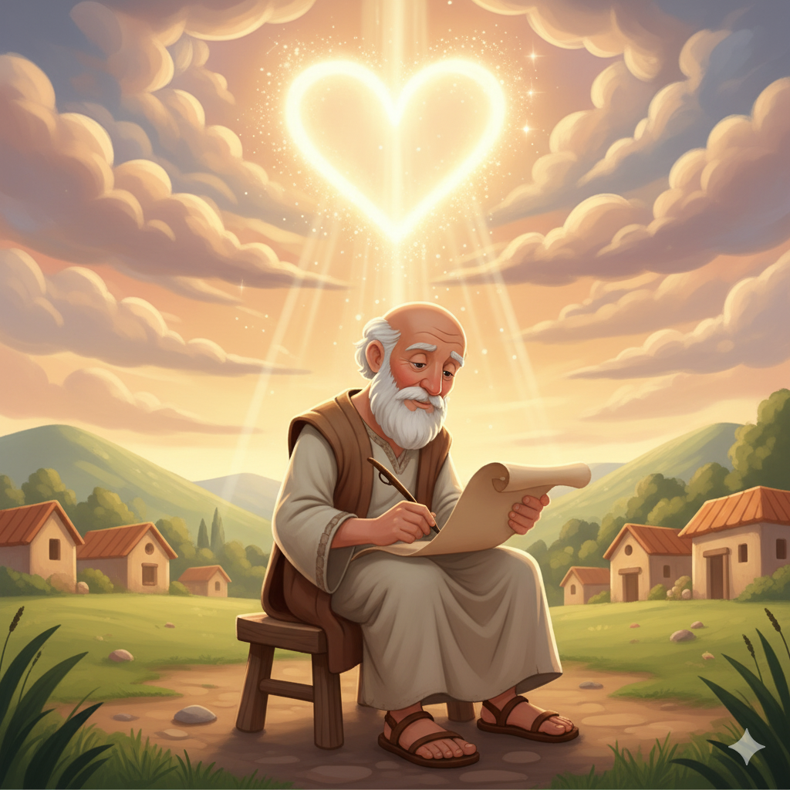

O Amor Que Nunca Desiste — Um Resumo Visual para Crianças
Mesmo quando erramos e nos afastamos,
O amor de Deus nunca nos abandona.
Como Oséias amou Gômer sem parar,
Deus nos ama e sempre vai nos buscar!
O perdão não é fraqueza — é a força maior,
É o coração de Deus transbordando de amor!
📖 Oséias 14:4 — "Eu os curarei da infidelidade e os amarei de livre vontade."
Não importa o quanto você se perdeu,
Deus espera com os braços abertos seus.
O arrependimento abre uma nova porta,
E Deus transforma a vida de quem retorna!
Nenhuma distância é grande demais para o amor,
Que vence o pecado e remove toda dor!
📖 Oséias 6:1 — "Venham, voltemos para o Senhor, pois ele nos feriu, mas nos curará."
"Quero misericórdia, não sacrifício!" Deus diz,
Não basta o culto externo — que o coração reviz!
De que vale oferta sem amor de verdade?
Deus quer intimidade, não só formalidade!
Jesus citou Oséias duas vezes — e é verdade:
O que mais importa a Deus é o amor, não a vaidade!
📖 Oséias 6:6 — "Porque misericórdia quero, e não sacrifício." (Citado por Jesus em Mt 9:13 e Mt 12:7!)
💕
"Porque misericórdia quero, e não sacrifício, e o conhecimento de Deus, mais do que holocaustos."
Oséias 6:6
Jesus citou esse versículo duas vezes nos Evangelhos (Mateus 9:13 e 12:7)! Deus não quer só que façamos coisas religiosas — Ele quer nosso coração, nosso amor e nossa amizade com Ele.
Um profeta que obedeceu a Deus mesmo quando foi doloroso. Deus o chamou para casar com Gômer como uma parábola viva: o casamento de Oséias mostraria ao povo de Israel o quanto Deus sofre com a infidelidade deles — e o quanto os ama mesmo assim.
📖 Leia na Bíblia — Oséias 3:1
"Ama ainda uma mulher amada de outrem... assim como o Senhor ama os filhos de Israel."
A esposa de Oséias que representava o povo de Israel em sua infidelidade a Deus. Ela abandonou Oséias, mas ele a buscou de volta — pagando o preço para resgatá-la. Assim Deus nunca desiste de Seu povo, mesmo quando eles O abandonam por ídolos.
📖 Leia na Bíblia — Oséias 11:8
"Como poderei abandonar-te, ó Efraim?... O meu coração se revira dentro de mim."
Oséias profetizou para o Reino do Norte (Israel) por volta de 750–722 a.C. O povo estava rico materialmente, mas adorava ídolos de Baal e havia abandonado a aliança com Deus. Em 722 a.C., a Assíria invadiu e destruiu o reino — exatamente como Oséias havia anunciado.
📖 Leia na Bíblia — Oséias 4:6
"O meu povo foi destruído por falta do conhecimento."


📖 Leia em casa!
Oséias tem 14 capítulos. Cap. 1–3 contam a história do casamento; cap. 6 tem o versículo mais citado por Jesus; cap. 11 tem a mais comovente declaração de amor de Deus!
💒 Parte 1 (Cap. 1–3): O Casamento Como Parábola
Deus pede a Oséias que case com Gômer, uma mulher que seria infiel. Os filhos recebem nomes proféticos: Jezreel (juízo), Lo-Ruama ("não amada") e Lo-Ami ("não meu povo"). Mas no capítulo 3, Oséias a busca de volta e paga o preço para resgatá-la — um retrato do amor redentor de Deus!
📖 Oséias 2:14 — "Mas eis que eu a atrairei e a levarei ao deserto, e lhe falarei ao coração."
⚖️ Parte 2 (Cap. 4–14): Julgamento e Restauração
Oséias apresenta as acusações de Deus contra Israel: falta de conhecimento de Deus, adoração de ídolos, injustiça, confiança em potências estrangeiras em vez de em Deus. O juízo virá — mas o livro termina com uma promessa linda de restauração e amor renovado!
📖 Oséias 14:4 — "Eu os curarei da infidelidade e os amarei de livre vontade."
💡 A Mensagem Central
Israel foi chamado a ser esposa fiel de Deus. Mas foi infiel, adorando os Baals como uma prostituta espiritual. Ainda assim, o amor de Deus — chamado hesed em hebraico (amor leal, fidelidade amorosa) — persiste. Ele vai punir, mas para restaurar, não para destruir!
📖 Oséias 6:6 — "Porque misericórdia quero, e não sacrifício."
Oséias revela algo extraordinário: Deus nos ama não porque somos bons, mas porque Ele escolheu nos amar. Mesmo quando Israel foi completamente infiel, Deus continuou amando. Esse amor em hebraico se chama hesed — amor leal e inabalável.
📖 Oséias 11:9
"Não executarei o furor da minha ira... porque sou Deus e não homem."
Oséias ensina que o arrependimento genuíno sempre encontra Deus de braços abertos. O convite "Voltemos para o Senhor" (6:1) mostra que nunca é tarde demais. Deus espera por nós, como o pai do filho pródigo (que Jesus contou séculos depois!).
📖 Oséias 6:1
"Venham, voltemos para o Senhor, pois ele nos feriu, mas nos curará."
Jesus citou Oséias 6:6 duas vezes! E Oséias 11:1 ("Do Egito chamei o meu filho") foi cumprido em Mateus 2:15, quando José levou Jesus ao Egito. O nome "Oséias" significa salvação — a mesma raiz de "Jesus"!


Oséias foi escrito para mostrar que por trás de todo o juízo de Deus há um coração que ama. Deus não pune por crueldade — Ele disciplina como um pai que não desiste do filho. A punição de Israel não era o fim da história, era o caminho para a restauração.
📖 Oséias 2:19-20
"E desposar-te-ei para sempre... desposar-te-ei em fidelidade, e conhecerás o Senhor."
Israel estava destruindo a si mesmo com a idolatria, a injustiça e a falta de conhecimento de Deus. Oséias clama: Voltem! Há um caminho de volta! O amor de Deus é maior que o pecado de Israel — e maior que o nosso também.
📖 Oséias 14:1
"Volta, ó Israel, para o Senhor teu Deus, pois tropeçaste na tua iniquidade."
🌟 Lição Principal: Deus nos ama com um amor que não se cansa e não desiste. Quando nos afastamos, Ele nos chama de volta. Quando voltamos, Ele nos cura. O amor de Oséias por Gômer é apenas uma sombra do amor infinito de Deus por nós!
🎭 Uma parábola viva: Oséias não apenas pregou o amor de Deus — ele o viveu. O casamento com Gômer foi doloroso e real, não apenas simbólico. Deus pediu que Oséias sentisse na própria pele a dor que Deus sente com a infidelidade do Seu povo!
📛 Nomes proféticos dos filhos: Os três filhos de Oséias receberam nomes que eram mensagens de Deus: Jezreel (local do juízo), Lo-Ruama ("não amada") e Lo-Ami ("não meu povo"). Mas Deus prometeu que um dia os chamaria de "Amada" e "Meu povo" (Os 2:23)!
✝️ Oséias significa "Salvação": O nome hebraico Hoshea (Oséias) tem a mesma raiz de Yeshua (Jesus)! O profeta cujo nome significa "salvação" pregou sobre o amor que salva. Jesus é a salvação que Oséias anunciava!

"Do Egito chamei o meu filho" (Os 11:1) foi citado em Mateus 2:15 sobre Jesus, quando José levou a família ao Egito para fugir de Herodes. Israel saiu do Egito; Jesus também — e Ele é o verdadeiro Israel!
Jesus citou Oséias 6:6 duas vezes nos Evangelhos (Mt 9:13 e 12:7): "Misericórdia quero, e não sacrifício." Ele usava Oséias para ensinar que o amor e o relacionamento com Deus valem mais que qualquer ritual religioso.
O amor redentor de Oséias por Gômer aponta diretamente para Jesus, que pagou o preço máximo — Sua própria vida — para nos resgatar da escravidão do pecado e nos trazer de volta ao Pai.
Jesus cita Oséias para defender os pecadores
"Mas ide, e aprendei o que significa: Misericórdia quero, e não sacrifício; porque não vim chamar os justos, mas os pecadores ao arrependimento."
📖 Mateus 9:13
Jesus usou Oséias para justificar por que comia com pecadores e coletores de impostos. O amor de Deus persegue quem está perdido — não espera quem está perdido chegar sozinho!
Converse com sua família, turma ou professor sobre essas perguntas!
💔
Oséias amou Gômer mesmo quando ela o abandonou. Você já amou alguém que te machucou? Como foi difícil continuar amando? O que isso te ensina sobre o amor de Deus por nós?
🔄
Deus disse: "Misericórdia quero, e não sacrifício." O que você acha que Ele quis dizer? Tem alguma coisa "religiosa" que você faz mas que talvez falte o amor por dentro? O que mudaria?
🏠
O livro termina com: "Voltemos para o Senhor." Tem alguma área da sua vida onde você se afastou de Deus — em pensamentos, atitudes ou ações? O que você poderia fazer para voltar?
Escolha um desafio (ou faça os três!) e seja um explorador da Bíblia!
💕
Pense em alguém que te machucou. Esta semana, ore por essa pessoa e, se for possível, diga que a perdoa. Lembre: você está fazendo o que Oséias fez — e o que Deus faz por nós todo dia!
✍️
Escreva "Misericórdia quero, e não sacrifício" e cole em algum lugar da casa. Cada vez que ler, pense: estou sendo misericordioso com as pessoas ao meu redor?
📖
Leia esse capítulo em voz alta — é uma das declarações mais emocionantes de amor de Deus na Bíblia. Depois responda: o que mais te surpreendeu sobre como Deus nos ama?
Trilho Kids | Desenvolvido com ❤️ para crianças © 2025